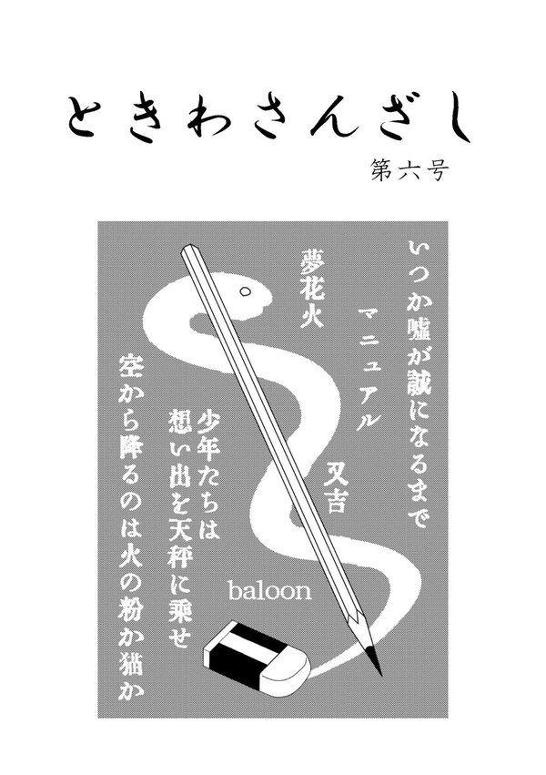

掲載
作品
第六号 (2017)
○画面右上の「掲載作品」をタップすると目次が表示されます
○作品ページでは、ビューワーの左半分・右半分をタップするとそれぞれ次のページ・前のページに移動できます
はじめに
この度は、宮崎大学医学部文芸部学祭部誌「ときわさんざし」第六号をお手に取っていただき、まことにありがとうございます。
昨年に引き続き部誌を無事に発刊し、皆様のお手元に渡すことができてほっとしております。
医学生の執筆した小説を集めた冊子ではあるのですが、医学に限らず様々なテーマのものを掲載しております。
「医学生らしい」ものもあるでしょうし、「医学生らしくない」ものもきっとあるでしょう。
どの作品も文芸部のメンバーがこれまでの生活や経験を通じて思ったこと、感じたこと、考えたことの結晶です。これらの作品を通して、少しでも医学生を身近に感じて頂ければと思います。
また、今回は初めての試みとしてアンケート（感想カード）を作っております。
今回のときわさんざしを読んだ感想をお書きくださると、部員一同励みになります。
お時間があるときにでもお答え頂けたら幸いです。
2017年 11月18日
宮崎大学医学部文芸部部長
